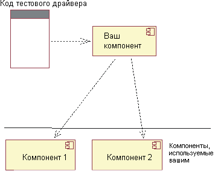
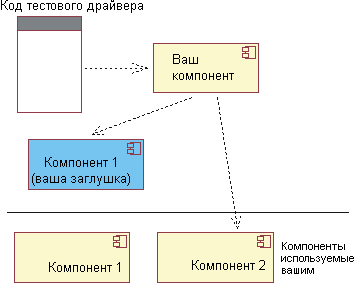

| Концепция: Заглушки |
 |
|
| Связанные элементы |
|---|
ВведениеТестирование компонента заключается в подаче входных данных в его интерфейс, ожидании ответа компонента и проверки полученных результатов. В процессе работы компоненты часто пользуются другими компонентами, передают им данные и используют полученную от них информацию:  Рисунок 1: Тестирование реализованного компонента Эти другие компоненты могут вызывать сложности при тестировании:
Во избежание возникновения таких сложностей можно пользоваться заглушками компонентов (другое название заглушек - имитаторы). Заглушки должны вести себя так же, как вели ли бы себя реальные компоненты, на тех входных данных, которые они могут получить в ходе тестирования. Однако это только задача-минимум: в качестве заглушек можно использовать и полноценные эмуляторы, с максимальной точностью имитирующие поведение реального компонента. Например, довольно часто имеет смысл создание программных заглушек для аппаратного обеспечения. Они будут вести себя точно так же, как аппаратное обеспечение, только работать медленнее. Применение таких заглушек упрощает отладку, снимает проблему недостатка единиц оборудования, и наконец, ими можно пользоваться еще до завершения разработки оборудования.  Рисунок 2: Тестирование компонента с заглушкой вместо компонента, от которого он зависит У заглушек есть два недостатка.
Заглушки и практика разработки программного обеспеченияИногда заглушки создаются только потому, что реальный компонент еще не доступен на момент тестирования. Во всех остальных случаях заглушки следует сохранять после завершения разработки. Скорее всего, тесты, поддерживаемые заглушками, будут важны при обслуживании продукта. Поэтому качество заглушек должно быть выше, чем качество кода на выброс. Хотя к качеству заглушек не предъявляются настолько жесткие требования, как к коду продукта (например, большинство заглушек не нуждается в собственных тестах), в дальнейшем некоторые из них придется обслуживать в процессе изменения продукта. Если обслуживание будет требовать слишком больших усилий, заглушки будут выброшены, и инвестиции в них будут потеряны. Заглушки влияют на структуру компонентов - особенно в случаях, когда они сохраняются на будущее. Например, предположим, что компонент будет хранить пары из ключей и значений в базе данных. Сравним два сценария разработки: Сценарий 1: база данных используется как для тестирования, так и для работы. . Существование базы данных не нужно скрывать от компонента. Можно даже инициализировать компонент с именем базы данных:
public Component(
String databaseURL)
{
try
{
databaseConnection = DriverManager.getConnection(databaseURL);
...
} catch (SQLException e) {...}
}
И хотя вряд ли вы будете пользоваться операторами SQL для всех операций чтения и записи значений, почти наверняка операторы SQL будут, по крайней мере, в нескольких методах. Например, компонент, нуждающийся в значении, может вызывать следующий метод:
public String get(String key)
{
try
{
Statement stmt = databaseConnection.createStatement();
ResultSet rs = stmt.executeQuery(
"SELECT value FROM Table1 WHERE key=" + key);
...
} catch (SQLException e) {...}
}
Сценарий 2: в целях тестирования база данных заменена заглушкой. Код компонента должен быть независим от того, с чем он работает: с реальной базой данных или с заглушкой. Поэтому в коде должны применяться методы абстрактного интерфейса:
interface KeyValuePairs
{
String
get(String key);
void
put(String key, String value);
}
В тестах пары из ключей и значений KeyValuePairs будут реализованы с помощью какой-нибудь простой конструкции, например таблицы:
class FakeDatabase implements KeyValuePairs
{
Hashtable table = new Hashtable();
public String
get(String key) {return (String) table.get(key); }
public void
put(String key, String value) {table.put(key, value); }
}
За исключением периода тестирования, компонент будет пользоваться адаптером,
преобразующим вызовы KeyValuePairs в операторы SQL:
class DatabaseAdapter implements KeyValuePairs
{
private Connection databaseConnection;
public DatabaseAdapter(String databaseURL)
{
try
{
databaseConnection = DriverManager.getConnection(databaseURL);
...
} catch (SQLException e) {...}
}
public String
get(String key)
{
try
{
Statement stmt = databaseConnection.createStatement();
ResultSet rs = stmt.executeQuery("SELECT value FROM Table1 WHERE key=" + key);
...
} catch (SQLException e) {...}
}
public void
put(String key, String value) {... }
}
У компонента может быть один и тот же конструктор для тестирования и реальной эксплуатации. Этот конструктор может принимать имя объекта, реализующего KeyValuePairs. Как вариант, конструктор может предоставлять данный интерфейс только для тестирования и требовать, чтобы реальные клиенты компонента передавали имя базы данных: \
class Component
{
public Component(String databaseURL)
{
this.valueStash = new DatabaseAdapter(databaseURL);
} // For testing.
protected
Component(KeyValuePairs valueStash)
{
this.valueStash = valueStash;
}
}
Поэтому с точки зрения программиста получилось, что два сценария проекта порождают один и тот же API, но один из этих сценариев проще в тестировании. К тому же учтите, что некоторые тесты могут пользоваться реальной базой данных, а некоторые - заглушкой. Дополнительная информацияДополнительную информацию о заглушках можно найти в следующих источниках:
|
© Copyright IBM Corp. 1987, 2006. Все права защищены.. |